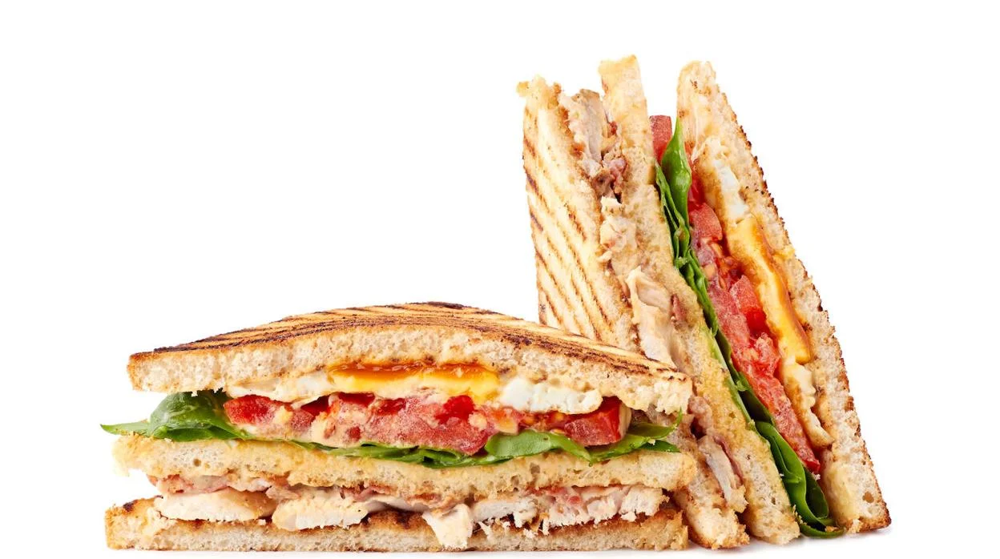

Club Sándwich

El club sándwich es un clásico de los restaurantes y comidas rápidas. Se compone de varias capas de pan tostado con pollo, jamón, tocino, lechuga, tomate y mayonesa, creando un sándwich abundante y delicioso.

El club sándwich es un clásico de los restaurantes y comidas rápidas. Se compone de varias capas de pan tostado con pollo, jamón, tocino, lechuga, tomate y mayonesa, creando un sándwich abundante y delicioso.